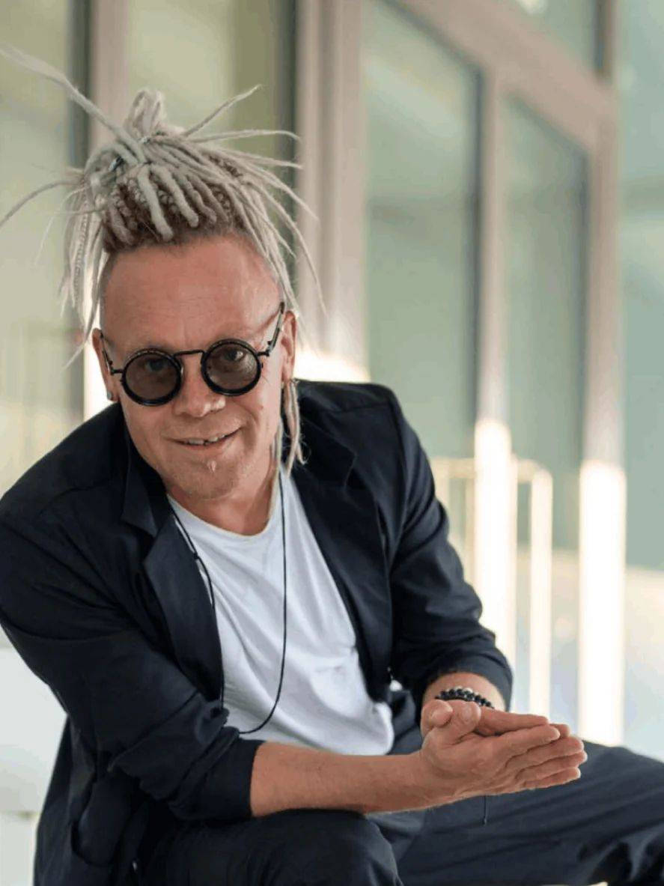

Łukasz Klimek
Photographer & Creative Producer
Warsaw / Berlin
Łukasz Klimek is a photographer and creative producer working between Warsaw and Berlin. He creates fine art portraits, editorial photography and brand imagery, collaborating with artists, entrepreneurs, brands and cultural institutions. Before photography he worked as an actor, musician and street performer. He brings that experience to every session, building an atmosphere in which subjects feel at ease and reveal their own personality. He is the author of “The Real Ones / Voice of the City”, a multimedia project combining photography, film and conversation.
- Disciplines
- Fine art portraiture, editorial photography, brand campaigns, fashion campaigns, multimedia projects, event photography, live portrait
- Website
- lukasklimek.com
- @lukasklimekphotography
- YouTube
- @lukaszklimekphotography
Biography
Łukasz Klimek is a photographer and creative producer working between Warsaw and Berlin. At the centre of his work is the person: their story, their personality and the way they see the world. He creates fine art portraits, personal branding photography and editorial work, collaborating with artists, entrepreneurs, brands and cultural institutions.
Before turning to photography, he worked as an actor, musician and street comedian. He also organised events and worked on festival productions across Europe. The stage taught him to observe, to improvise and to connect with people. Today he brings these skills to every session, creating an atmosphere in which his subjects can feel at ease and show their own personality.
He is the author of “Prawdziwi / Głos Miasta” (The Real Ones / Voice of the City), a multimedia project combining photography, film and conversation. He invites both well-known figures and people outside the media spotlight to take part. Those portrayed include Helena Norowicz, Rafał Olbiński, Henryk Gołębiewski, Robert Majkut and Mirosław Zbrojewicz. The project has been exhibited at Hala Koszyki during Noc Wieżowców (Skyscraper Night) / Nowa Warszawa, at Marina Warszawa, and at Pałac Zamoyskich (Zamoyski Palace) on Foksal Street during the premiere of ArchiSnob magazine.
His work includes photographs of Marlon Red for The Dummy's Tales, made during Berlin Art Week; portraits of Irina Dzhus published in we.directory; and photographs of the designer's work for the Central Museum of Textiles. He has also worked with Westate and Business Forum. His photographs have been published in Wysokie Obcasy / Gazeta Wyborcza, ArchiSnob and GQ, and his work has been featured by Nowa Warszawa and Berliner Fotografen.
He also develops social projects, including “Historie bezdomnością pisane” (Stories Written by Homelessness) and “Moja i Twoja niepełnosprawność” (My and Your Disability). He led photography workshops for people with disabilities as part of Lodołamacze 2025, and has photographed veterans of the Warsaw Uprising.
He creates live portraits at conferences and events. In a mobile studio, during short sessions with participants, he produces both personal branding and fine art portraits, including at the Lust for Life conference. As a creative producer, he brings together the concept, the work with the people in front of the lens and the production of visual material, assembling collaborators to suit the needs of each project. He is drawn to a psychological approach, because behind everything there is a person.
Selected Projects
The Real Ones / Voice of the City
Prawdziwi / Głos Miasta
An ongoing multimedia project combining photography, film and conversation. Its subjects range from public figures to people outside the media spotlight, and each portrait is accompanied by an interview and a personal statement. Among those portrayed: Helena Norowicz, Rafał Olbiński, Henryk Gołębiewski, Robert Majkut and Mirosław Zbrojewicz. Exhibited at Hala Koszyki (Noc Wieżowców / Nowa Warszawa), Marina Warszawa and Pałac Zamoyskich at Foksal during the ArchiSnob magazine premiere.
View project →Fashion is Art: Live Portrait
Lust for Life. Lust for Business. · SARP Warsaw
Portraits created live in a mobile studio during the Lust for Life. Lust for Business. conference at SARP Warsaw. Short sessions with participants, speakers and guests, in a format designed for conferences, premieres and corporate events.
View project →Stories Written by Homelessness
Historie bezdomnością pisane
A social photography project documenting people experiencing homelessness: their stories, their faces and their humanity.
View project →My and Your Disability
Moja i Twoja niepełnosprawność
Portraits, social actions and a documentary film about people with disabilities and senior citizens. Includes “The World Through Your Lens” workshops for people with disabilities (Lodołamacze 2025, Royal Castle in Warsaw).
View project →Theater Sommervarieté Rügen
Rügen, Germany
Stage photography and artist portraits captured during live performances.
View project →Selected Collaborations
-
ArchiSnob / Wise Habit
Exhibition of “The Real Ones / Voice of the City”, plus event photography for the ArchiSnob Summer Party and the Lust for Life. Lust for Business. conference.
-
The Dummy's Tales / Berlin Art Week ↗︎
Photographs of Marlon Red for “Marlon Red: The Body as Living Architecture” by Francesca Interlenghi.
-
we.directory ↗︎
Portraits of designer Irina Dzhus for “Irina Dzhus on Fashion as Transformation, Identity, and Survival”.
-
Westate
Brand and event photography, including documentary coverage of the company's 5th anniversary celebration in Warsaw.
-
Central Museum of Textiles / Irina Dzhus
Fashion and presentation photography of the designer's work.
-
Sacharow Entertainment (Germany)
Photography of artists, performers and stage productions.